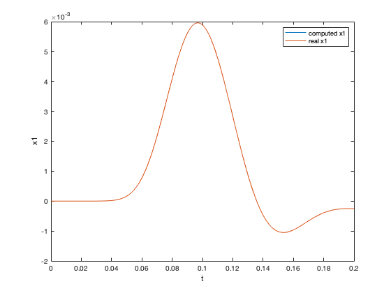
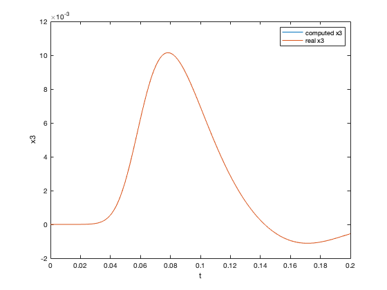
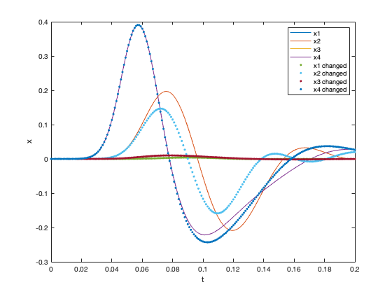
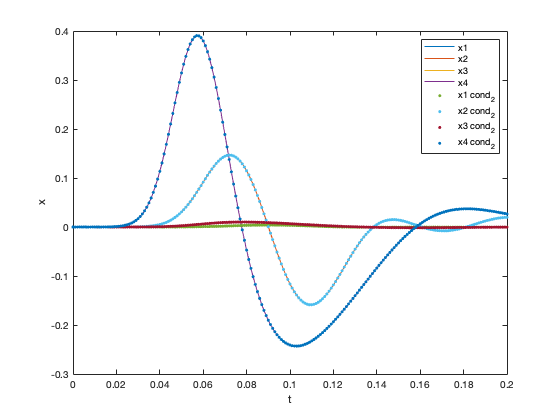

Contents
clear all; close all;
define parameters
k1= 80; k2= 50; f1= 50; f2 =50; af= 3000; ab= 1000; c= 1; mu= 0.05; sigma= 0.01; t = 0:0.001:0.2;
define matrices
A=[0,1,0,0;-k1^2,-f1,af,0;0,0,0,1;ab,0,-k2^2,-f2]; C=[0;0;0;c]; u = normpdf(t,mu,sigma);
integrate
x=EulerIntegration(A,C,u);
a)
load true data
load('tn20_ex4.mat')
x_from_file = x_condition_1;
compare / verify
figure; plot(t,x(1,:)); hold on; plot(t,x_from_file(1,:)); legend('computed x1','real x1'); xlabel('t'); ylabel('x1'); figure; plot(t,x(3,:)); hold on; plot(t,x_from_file(3,:)); legend('computed x3','real x3'); xlabel('t'); ylabel('x3'); % *as one can see the results are exactly the same :)* 
b)
look at data
figure; plot(t,x_condition_1(:,:),'-'); hold on; plot(t,x_condition_2(:,:),'.'); xlabel('t'); ylabel('x'); legend('x1','x2','x3','x4','x1 changed','x2 changed','x3 changed','x4 changed');
grid search
no_spacing = 1000; explained_variances = zeros(4,no_spacing); i = 1; searchspace = zeros(4,no_spacing); searchspace(1,:)= linspace(40,120,no_spacing); for k1 = linspace(40,120,no_spacing) A=[0,1,0,0;-k1^2,-f1,af,0;0,0,0,1;ab,0,-k2^2,-f2]; C=[0;0;0;c]; u = normpdf(t,mu,sigma); x=EulerIntegration(A,C,u); explained_variances(1,i) = 1- var(x_condition_2-x)/var(x_condition_2); i = i+1; end i =1; k1 =80; searchspace(2,:) =linspace(25,75,no_spacing); for k2 = linspace(25,75,no_spacing) A=[0,1,0,0;-k1^2,-f1,af,0;0,0,0,1;ab,0,-k2^2,-f2]; C=[0;0;0;c]; u = normpdf(t,mu,sigma); x=EulerIntegration(A,C,u); explained_variances(2,i) = 1- var(x_condition_2-x)/var(x_condition_2); i = i+1; end i=1; k2= 50; searchspace(3,:) =linspace(2800,3200,no_spacing); for af = linspace(1500,4500,no_spacing) A=[0,1,0,0;-k1^2,-f1,af,0;0,0,0,1;ab,0,-k2^2,-f2]; C=[0;0;0;c]; u = normpdf(t,mu,sigma); x=EulerIntegration(A,C,u); explained_variances(3,i) = 1- var(x_condition_2-x)/var(x_condition_2); i = i+1; end i=1; af= 3000; searchspace(4,:) =linspace(500,1500,no_spacing); for ab = linspace(900,1100,no_spacing) A=[0,1,0,0;-k1^2,-f1,af,0;0,0,0,1;ab,0,-k2^2,-f2]; C=[0;0;0;c]; u = normpdf(t,mu,sigma); x=EulerIntegration(A,C,u); explained_variances(4,i) = 1- var(x_condition_2-x)/var(x_condition_2); i = i+1; end ab = 1000; maximums = zeros(4,1); best_parameter = zeros(4,1); for j = 1:1:4 [m,k] = max(explained_variances(j,:)); maximums(j) =m; best_parameter(j) = searchspace(j,k); end [max_all,i] = max(maximums'); fprintf('best model is model %i with best param = %i',i,best_parameter(i))
best model is model 1 with best param = 9.997998e+01
compute changed x with found parameter
k1 = best_parameter(i); A=[0,1,0,0;-k1^2,-f1,af,0;0,0,0,1;ab,0,-k2^2,-f2]; C=[0;0;0;c]; u = normpdf(t,mu,sigma); x=EulerIntegration(A,C,u);
show approximated model (k1 changed to approx. 100) compared to x_condition_2
figure; plot(t,x(:,:),'-'); hold on; plot(t,x_condition_2(:,:),'.'); xlabel('t'); ylabel('x'); legend('x1','x2','x3','x4','x1 cond_2','x2 cond_2','x3 cond_2','x4 cond_2');